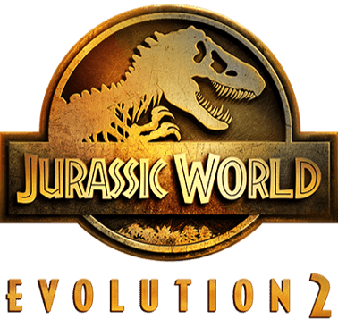
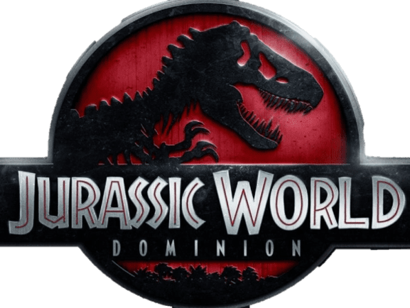
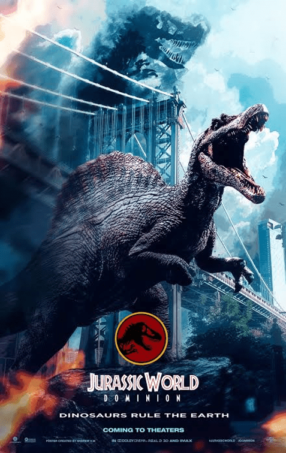

- Disfruta del contenido de la comunidad



El verdadero Origen de este Mundo
Muchos no conocen que el escritor Michael Crichton comenzó a redactar un guion cinematográfico que narraba la historia de un estudiante interesado en la clonación de dinosaurios, una idea que luego desembocó en la escritura de la novela Parque Jurásico. Lo que lo llevo a que antes de su publicación y de conocerse su contenido, fijó el precio por sus derechos en 1,5 millones USD en adición a un sustancial porcentaje de las ganancias que las posibles adaptaciones cinematográficas que tuvieran. A su lanzamiento, Warner Bros. y Tim Burton, Columbia Pictures y Richard Donner, así como 20th Century Fox y Joe Dante intentaron adquirir los derechos de la misma, sin embargo Universal Pictures y Steven Spielberg los obtuvieron en mayo de 1990, una de las mejores cosas que le pudieron pasar a esta franquicia. Hasta el 2021 cuenta con 5 adaptaciones a la gran pantalla además de una quinta a puertas del estreno generando un valor total de 4997.5 millones de dólares en taquilla mundial, creando una marca global que sigue vigente hoy en día, en muchos ámbitos del entrenamiento algunas como atracciones, videojuegos, series, entre otras mas rentables como juguetes y figuras.
Nov-2021
Retorna el Spinosaurio al Parque
Hola a todos queridos paleontólogos, es que por fin se ha revelado nada más y nada menos que el esperado primer tráiler de la temporada 4 de la serie de animación de Netflix, y la verdad para nuestra sorpresa este tráiler ha sido mucho más extraño de lo que esperaba en un principio ya que tenemos elementos cuanto menos peculiares si nos situamos en la saga de 'JURASSIC PARK' y otros momentos son espectaculares y otros tantos nostálgicos pero sin duda la cuarta temporada apunta a ser la más ambiciosa de la serie hasta ahora y no me sorprendería que elementos de esta temporada sean tomados para futuras entregas, los invito a ver el tráiler en el link de la imagen, O entrar a ver las temporadas en:
Netflix y esta al tanto de sus novedades en JustWatchJurassic World Evolution 2
El Juego que Cambio el Roleplay de la Saga
Jurassic World Evolution 2 es la esperada secuela del juego Jurassic World Evolution, el éxito de Frontier de 2018, y desarrolla aún más la innovadora simulación de gestión de la primera entrega. Cuenta con una nueva y emocionante campaña narrativa, características novedosas y dinosaurios increíbles que cobran vida con un realismo inigualable. Gracias a un mayor número de opciones de construcción y personalización, el resultado es un juego de Jurassic World más grande y más auténtico que nunca. Has click sobre la imagen para que descubras por ti mism@ los detalles de este juego disponible para tu compra en STEAM
Jurassic World Dominion
Colin Trevorrow ha anunciado que ha finalizado su trabajo en Jurassic World: Dominion después de un largo proceso de producción. La tercera y probablemente última entrega de la saga Jurassic World tendría que haberse estrenado en verano de este mismo año, pero la pandemia de coronavirus retrasó indefinidamente su proyección en cines. No obstante, Jurassic World 3 comenzó a rodarse a comienzos de 2020, presentándonos una filmación atribulada, múltiples desafíos y cambios de calendario por doquier. Trevorrow, que inició esta trilogía en 2015, verá su obra concluida en junio de 2022. Ya esta disponible el primer trailer de esta obra míralo en la sección superior de comunidad.
